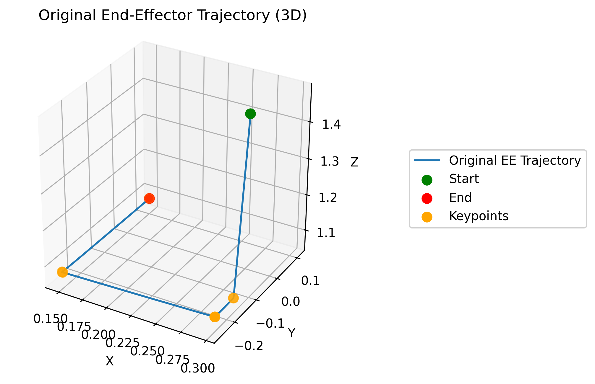
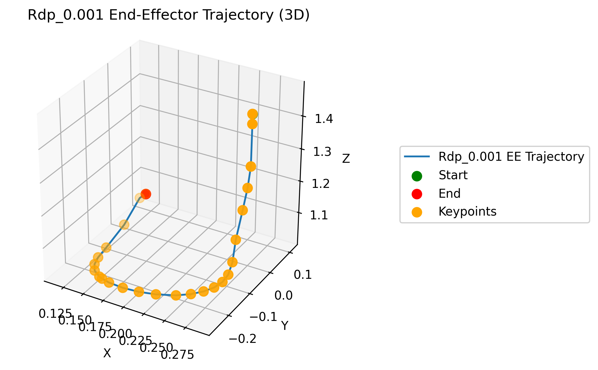
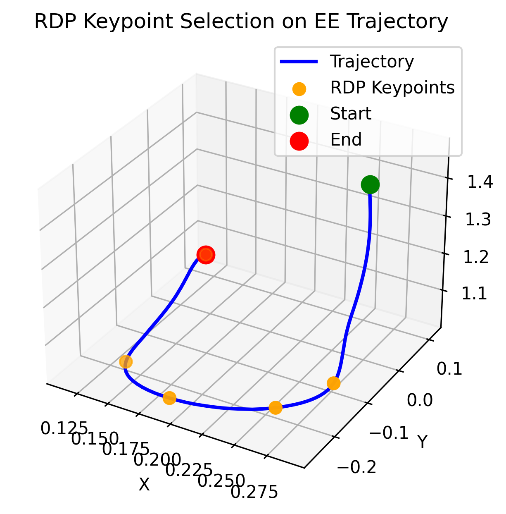
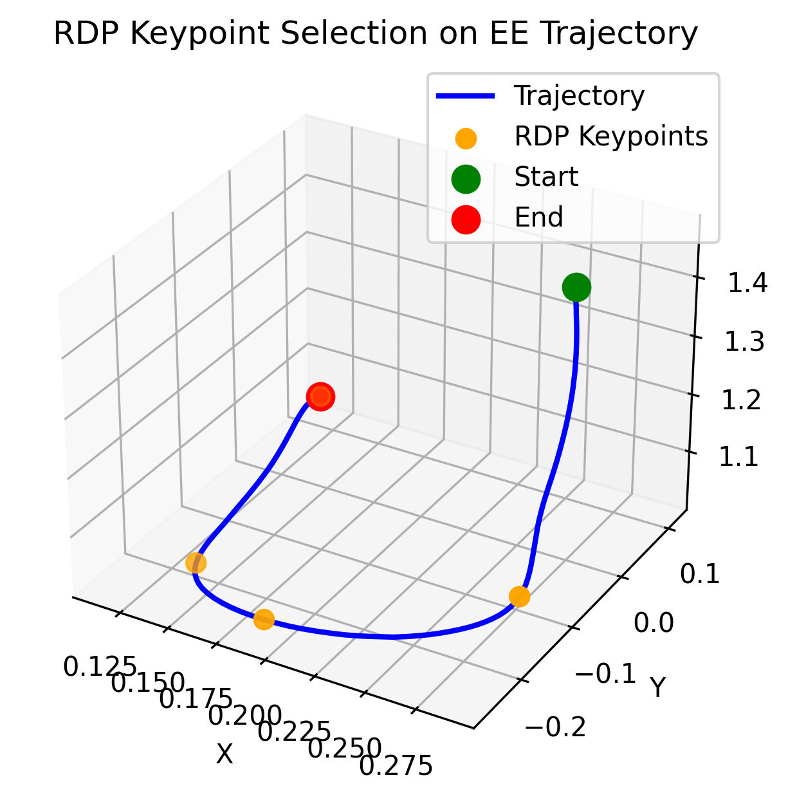
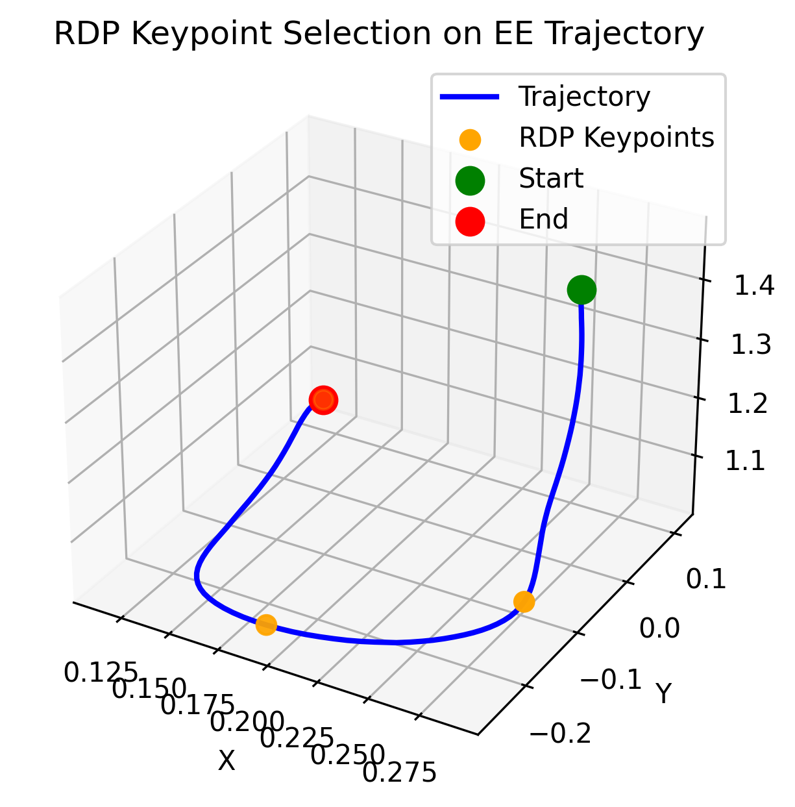

Abstract
Existing RLBench-based hierarchical manipulation methods such as PerAct and RVT extract subgoals using simple heuristics based on near-zero joint velocities and gripper state transitions. While effective on standard RLBench demonstrations, these methods rely heavily on explicit pauses between motions and become unreliable under smooth trajectories without clear transition points. In this work, we introduce a smooth-trajectory benchmark for RLBench where explicit pauses are removed while preserving the original task behavior. We then propose a geometry-based subgoal decomposition method using trajectory simplification to extract meaningful intermediate subgoals from smooth trajectories. Using a hierarchical framework based on RVT-2 and goal-conditioned 3D Diffusion Policy, our method achieves 56% higher success rates on the smooth benchmark compared to RVT-2 trained directly on smooth demonstrations. These results demonstrate that geometry-based trajectory simplification provides a more robust subgoal decomposition method that can automatically extract meaningful intermediate subgoals without relying on handcrafted heuristic rules.
Introduction and Motivation
Hierarchical manipulation policies have become an effective approach for robotic learning because they decompose manipulation into two separate problems: high-level task progression and low-level motion control. Rather than requiring a single policy to learn an entire manipulation behavior end-to-end, hierarchical frameworks allow a high-level policy to predict intermediate subgoals while a low-level controller focuses on executing motions to reach them. This decomposition reduces the effective planning horizon, improves learning efficiency, and enables more stable execution of complex manipulation behaviors.
As a result, subgoal selection becomes a critical component of hierarchical manipulation systems, since the quality of the extracted subgoals directly affects both high-level decision making and low-level motion execution. Effective subgoal decomposition transforms a complex manipulation task into a sequence of shorter and more manageable control objectives, enabling hierarchical policies to learn and execute robotic behaviors more efficiently and reliably.
Limitations of Existing Subgoal Heuristics for Hierarchical Manipulation
State-of-the-art manipulation methods on RLBench, such as PerAct and RVT, use heuristic-based keyframe extraction for subgoal decomposition. Specifically, actions are selected as keyframes when the joint velocities are near zero or when the gripper open/close state changes.
Original RLBench demonstration with explicit pauses.

Heuristic-based subgoal extraction from the trajectory.
This heuristic is effective on standard RLBench demonstrations because the trajectories contain explicit pauses before important manipulation actions such as grasping, pushing, or placing. These pauses naturally produce low-velocity transition points that are easily detected by heuristic-based keyframe extraction methods. However, this assumption becomes problematic when demonstrations are smooth and transition continuously between motions without explicit stopping behavior.
This limitation motivates the central question of this project: how can we extract meaningful subgoals from smooth robotic manipulation trajectories where explicit pauses are absent?
Methodology
Our methodology consists of three main components: generating smooth manipulation trajectories, extracting subgoals using the Ramer–Douglas–Peucker (RDP) algorithm, and training a hierarchical manipulation policy using the extracted subgoals.
1. Smooth Trajectory Generation
We first modify RLBench demonstrations by smoothing the end-effector trajectories. The goal is to remove artificial pauses while preserving the original task behavior. This creates a more challenging setting where velocity-based keyframe extraction is no longer naturally supported by the data. This step is important because it directly tests whether existing subgoal extraction methods depend on dataset artifacts rather than true task structure.
Original RLBench demonstration containing explicit pauses.
Smoothed demonstration with continuous motion and reduced pauses.
2. RDP-Based Subgoal Extraction
To extract subgoals from smooth trajectories, we use the Ramer-Douglas-Peucker (RDP) algorithm as a trajectory simplification method. Instead of detecting pauses, this approach identifies important geometric points along the trajectory that preserve the overall motion structure.
The RDP algorithm begins by connecting the start and end points of a trajectory segment with a straight line. It then finds the trajectory point with the largest perpendicular distance from this line. If the distance exceeds a threshold value ε (epsilon), that point is selected as an important keypoint and the algorithm recursively repeats the same process on the resulting subsegments. Through this recursive simplification process, RDP preserves the major geometric structure of the trajectory while removing redundant intermediate points.
The epsilon parameter controls the level of simplification. A smaller epsilon preserves more trajectory detail and produces denser keyframes, while a larger epsilon generates fewer and sparser subgoals. In this project, we experimented with several different epsilon values for the Ramer–Douglas–Peucker (RDP) algorithm and selected the value that produced the most meaningful subgoals based on qualitative evaluation of the extracted task progression.
Small Epsilon
Produces denser keyframes and preserves more local motion details, but may make policy learning harder by introducing too many intermediate targets.
Large Epsilon
Produces sparser keyframes and simpler subgoal sequences, but may remove important task transitions if the value is too large.
Goal
Select a small number of meaningful subgoals that capture task progress without overwhelming the high-level or low-level policy.

RDP keyframes with ε = 0.001

RDP keyframes with ε = 0.02

RDP keyframes with ε = 0.035

RDP keyframes with ε = 0.04
3. Hierarchical Policy Learning
After extracting subgoals, we train a hierarchical manipulation policy. The high-level policy predicts the next subgoal, while the low-level policy executes actions to reach that subgoal.
- High-level policy: RVT-2 predicts intermediate subgoals from visual observations and language-conditioned task information.
- Low-level policy: Goal-conditioned DP3 generates short-horizon actions conditioned on the current observation and target subgoal.
This structure allows us to evaluate whether better subgoal decomposition improves policy learning and execution on smooth manipulation trajectories.
Results
The experiments are designed to evaluate whether the proposed subgoal extraction method produces meaningful subgoals and whether those subgoals improve hierarchical manipulation performance.
Evaluation Questions
- Does the standard heuristic keyframe extraction method become unreliable after trajectory smoothing?
- Does RDP-based trajectory simplification produce more stable subgoals on smooth demonstrations?
- Does the hierarchical policy using RDP-based subgoals outperform policies trained with conventional heuristic subgoals?
Suggested Metrics
| Metric | Purpose |
|---|---|
| Task Success Rate | Measures whether the full manipulation task is completed successfully. |
| Number of Extracted Subgoals | Measures sparsity and consistency of the subgoal decomposition. |
Results Summary
Experimental results show that conventional heuristic-based subgoal extraction becomes less reliable when explicit pauses are removed from the demonstrations. On smooth trajectories, the heuristic method frequently produces excessive and unnecessary keyframes, leading to unstable subgoal decomposition and jerky motion during policy execution.
In contrast, geometry subgoal extraction using RDP produces fewer but more meaningful intermediate subgoals by preserving the major geometric structure of the trajectory. This results in more stable hierarchical execution and smoother motion generation on continuous manipulation trajectories.
Task Success Rate
| Task | RVT-2 + Motion Planner (Original Demonstrations) |
RVT-2 + Motion Planner (Smooth Demonstrations) |
Hierarchical Policy on Smooth Demonstrations (RVT-2 + Goal-Conditioned DP3) |
|---|---|---|---|
| SweepToDustpanOfSize | 100% | 20% | 76% |
Task success rate comparison across original demonstrations, smooth demonstrations, and the proposed hierarchical policy using RDP-based subgoal decomposition.
Average Number of Extracted Keyframes
| Task | Heuristic-Based Keyframe Extraction (Smooth Demonstrations) |
RDP-Based Keyframe Extraction (Smooth Demonstrations) |
|---|---|---|
| SweepToDustpanOfSize | 8.49 | 5.54 |
Average number of extracted subgoals on smooth demonstrations using heuristic-based and RDP-based subgoal decomposition methods.
Hierarchical Policy Rollout
The video below shows the hierarchical execution process on a smooth demonstration setting. RVT-2 first predicts the next subgoal, and goal-conditioned DP3 generates a short sequence of 16 actions to move toward that subgoal. After executing the action chunk, RVT-2 replans the next subgoal, and this process repeats until the task is completed.
Hierarchical policy rollout: RVT-2 predicts subgoals and goal-conditioned DP3 executes short-horizon action chunks before replanning.
Discussion and Limitations
What Worked
RDP-based subgoal extraction provided a more stable way to identify intermediate objectives from smooth trajectories. This helped reduce the dependence on artificial pauses and made the subgoal extraction process more compatible with continuous motion.
What Did Not Work Perfectly
Some hierarchical rollouts still suffered from subgoal repetition or delayed subgoal advancement. In particular, the high-level policy sometimes predicted a near-duplicate goal even after the low-level policy had already reached the current target.
This suggests a distribution mismatch between the states seen during high-level policy training and the states reached during learned low-level policy execution. Small deviations in low-level control can affect high-level subgoal prediction.
Limitations
- The current method is still based on geometric trajectory simplification rather than semantic task understanding.
- Performance can be sensitive to the RDP epsilon parameter.
- Evaluation is currently limited to selected RLBench tasks.
- The framework assumes that useful subgoals are visible in end-effector trajectory geometry, which may not always hold for more complex tasks.
Future Work
Future work could explore learned subgoal discovery methods in which a dedicated policy predicts intermediate subgoals directly from demonstrations rather than relying on fixed geometric trajectory simplification. Another promising direction is adaptive epsilon selection, where the trajectory simplification threshold is dynamically adjusted for each demonstration to produce subgoals that are most beneficial for downstream hierarchical policy learning. Another important future direction is extending subgoal decomposition beyond simulation trajectories to real-world human demonstration videos. Instead of extracting subgoals directly from simulator states, future work could investigate how to identify meaningful intermediate subgoals from human videos using visual motion patterns, object interactions, and temporal task progression.
Conclusion
This project investigates subgoal decomposition for smooth robotic manipulation trajectories. Existing RLBench-based heuristic methods often rely on explicit pauses in demonstrations, but these pauses may not exist in more realistic continuous-motion settings.
By smoothing RLBench demonstrations and applying trajectory-based subgoal extraction, we evaluate a more robust approach for selecting intermediate subgoals in hierarchical manipulation policies. Experimental results show that conventional heuristic methods can generate excessive and unstable keyframes on smooth trajectories, while RDP-based trajectory simplification produces fewer and more meaningful subgoals that improve hierarchical policy execution.
These results suggest that subgoal selection is a critical component of hierarchical manipulation systems. Selecting meaningful keyframes is not simply a preprocessing step — it directly affects the stability, smoothness, and overall performance of hierarchical robotic policies.
References
- James, S., Ma, Z., Arrojo, D. R., and Davison, A. J. RLBench: The Robot Learning Benchmark and Learning Environment. IEEE Robotics and Automation Letters (RA-L), 2020.
- Shridhar, M., Manuelli, L., and Fox, D. Perceiver-Actor: A Multi-Task Transformer for Robotic Manipulation. Proceedings of the 6th Conference on Robot Learning (CoRL), 2022.
- Goyal, A., Xu, J., Guo, Y., Blukis, V., Chao, Y.-W., and Fox, D. RVT: Robotic View Transformer for 3D Object Manipulation. Proceedings of the 7th Conference on Robot Learning (CoRL), 2023.
- Goyal, A., Blukis, V., Xu, J., Guo, Y., Chao, Y.-W., and Fox, D. RVT-2: Learning Precise Manipulation from Few Demonstrations. arXiv preprint arXiv:2406.08545, 2024.
- Ze, Y., Wang, G., Qin, Y., and colleagues. 3D Diffusion Policy: Generalizable Visuomotor Policy Learning via Simple 3D Representations. Robotics: Science and Systems (RSS), 2024.
- Douglas, D. H. and Peucker, T. K. Algorithms for the Reduction of the Number of Points Required to Represent a Digitized Line or Its Caricature. The Canadian Cartographer, 1973.